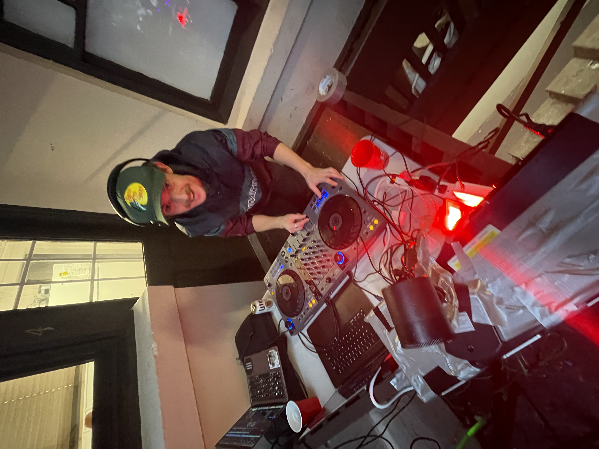
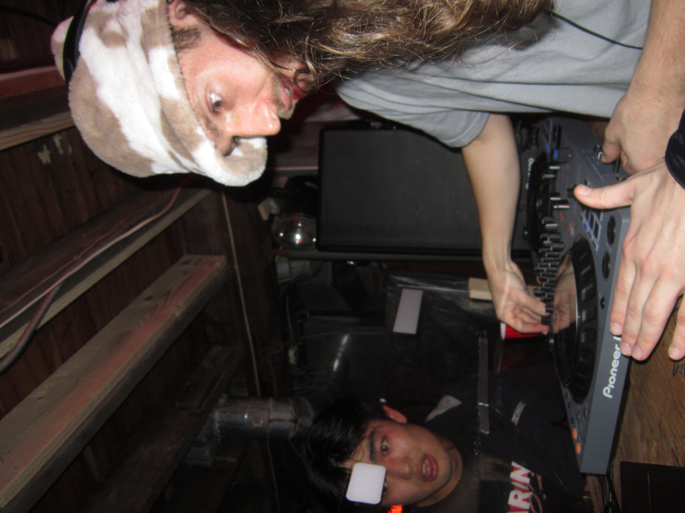
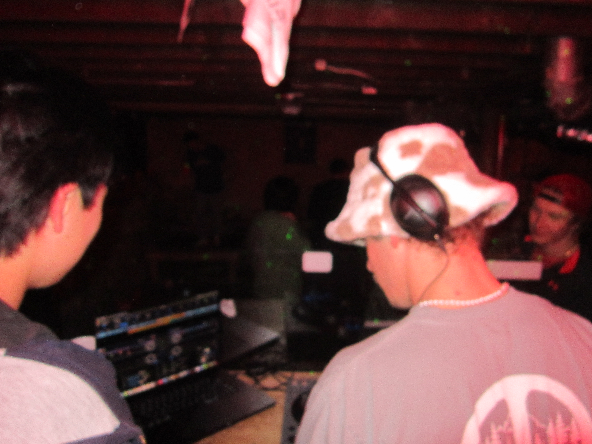
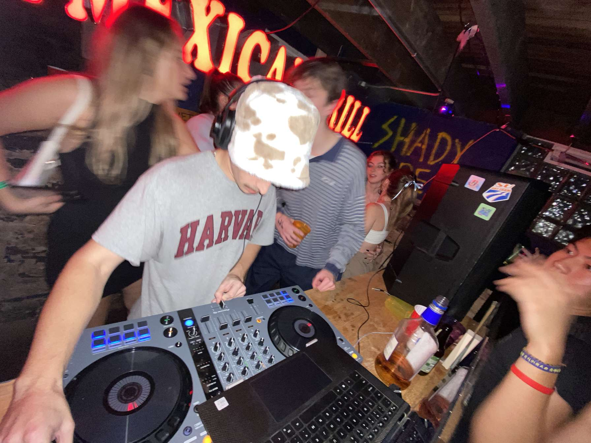

The Start:
I Originally learned how to DJ in the world of VR. This allowed me to keep the cost of entry into mixing
to stay very low while giving me all the features of a $1,000 set up. The application Is called Tribe XR DJ
and I highly recommend it to everyone who is interested in trying to DJ.

Figuring it out:
After I learned the basics, I decided to get my first set of Decks. I decided on the DDJ-200. This was a
very cheap deck with almost no fancy features, but I loved being able to get my physical hands on some
decks. This allowed me to take the techniques I learned in the digital VR world into real life. I also was
now able to start playing gigs. I started DJing for some of my friends when they would come over, but I
quickly started DJing at the Syracuse parties. This allowed me to work on my crowd knowledge
and understand how to see what audiences enjoy.
After playing a few times, people started reaching out to me to play at other venues. I
had opportunities to play at a few fraternity parties. These allowed me to network with other local DJs
and learn how to get gigs at house shows as well as other daytime parties around Syracuse. I was even able to
play at some local bars, which allowed me to start getting paid for my work.

Production:
These advancements in the world of Djing made me understand the importance of being able to
produce your own tracks. This is what can set you apart from every other DJ. By making your own tracks,
it makes people not want to just see any DJ. They want to see you. When you have your own music you
are now able to attract audiences that like not only the music you play, but also your own music. This
makes your crowds more specific to the genre you like and improves your overall experience as a DJ.

Making Music:
Making Music is very difficult, but as with anything the more you do it the better you get. I have learned
through trial and error. You must never give up and keep striving for perfection in your music. This has
led me to making tracks that I absolutely hate but also some that I really enjoy. It gives you the freedom
to make music that you like.
